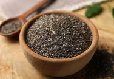

Fortaleça-se a partir do prato. Alimentação, o alicerce da saúde
Conheça 8 práticas para ter uma rotina saudável
Adotar uma rotina saudável é um tema recorrente na mídia, em consultórios médicos e até
nas conversas em família. Mas o que realmente significa ter uma rotina saudável? A verdade é que não há uma
única resposta. No entanto, existem várias maneiras de melhorar o nosso dia a dia para promover o bom
funcionamento do corpo e da mente. Aqui, compartilhamos algumas dicas práticas para você começar sua jornada
rumo a uma vida mais saudável.
Qual é a importância de adotar práticas saudáveis no dia a dia?
O investimento em estratégias para uma rotina mais saudável é algo que beneficia todos os
âmbitos das nossas vidas, desde a saúde até o trabalho e os relacionamentos pessoais. Com bons hábitos,
conseguimos ir mais longe e conquistar os nossos objetivos com garra e muita saúde!
Saúde mental: entenda o que é, e como desenvolver a cada dia!
Em tempos mais difíceis, é comum nossa cabeça se encher com muitas preocupações ao mesmo
tempo. Carga de trabalho, expectativas profissionais, pressão para estar tudo organizado e manter sua
produtividade exemplar. E além de tudo isso, as exigências pessoais: estar presente, ser compreensivo,
amigável. Isso tudo faz uma coisa baixar de nível: nossa saúde mental.
Não toma muita água? Esses hábitos vão te ajudar!
Com a correria do dia a dia, você sente que tem se hidratado pouco e lembrando a si mesmo
"beba água"? Pois saiba que não é a única pessoa que se preocupa com isso. Afinal, como resultado da baixa
ingestão de água, podem ocorrer o desenvolvimento de problemas como desidratação, pele ressecada, boca seca,
urina mais escura, pedra nos rins e por aí vai.
Conheça 5 benefícios da Chia?

Os benefícios da chia na nossa alimentação é algo que devemos destacar. Trata-se de um
alimento rico em vitaminas e nutrientes que aumentam exponencialmente nosso bem-estar e qualidade de vida.
Para os atletas de plantão, inclusive, as sementes de chia não devem ser ignoradas.
8 dicas para equilibrar o trabalho e a vida pessoal
A falta de tempo tem sido o principal argumento utilizado para explicar a razão de se
levar tarefas para casa ou fazer intermináveis horários extraordinários para conseguir dar conta do
trabalho. Práticas dessa natureza invadem a privacidade ou o espaço pessoal do colaborador e trazem
resultados negativos para ele e para a empresa.


.png)
.png)